Private Label / OEM
Start from an existing product platform, then confirm branding, packaging and project requirements.
Browse compatible seriesChoose a Yuchen Water product family and connection format, then send the project requirements that need review for an OEM water filtration quote.
Use the path that matches what you already know. Both routes lead to the same stable product pages.
Search and filters narrow the list; they do not create duplicate products.
One stable product identity can appear through a sourcing need or product-type entrance; the directory does not create duplicate product pages.
Start from an existing product platform, then confirm branding, packaging and project requirements.
Browse compatible seriesBring the target use case and configuration brief for engineering review; unconfirmed commercial or performance claims are not assumed.
Submit a project brief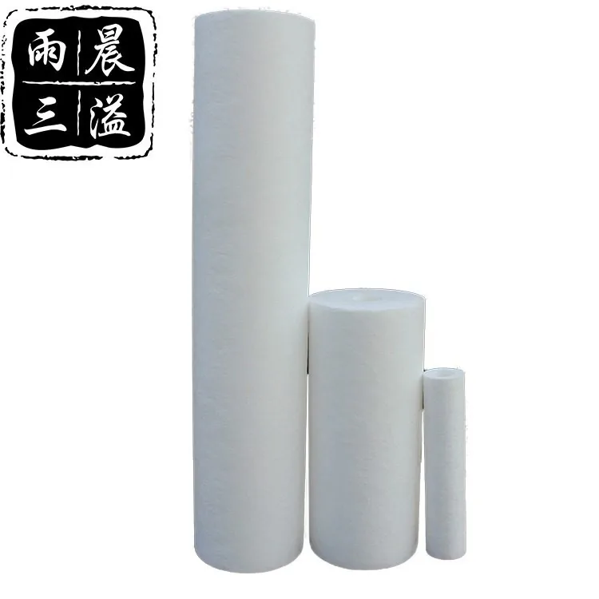
Sediment and particulate prefiltration.
Confirm: length, micron rating, weight and end format.
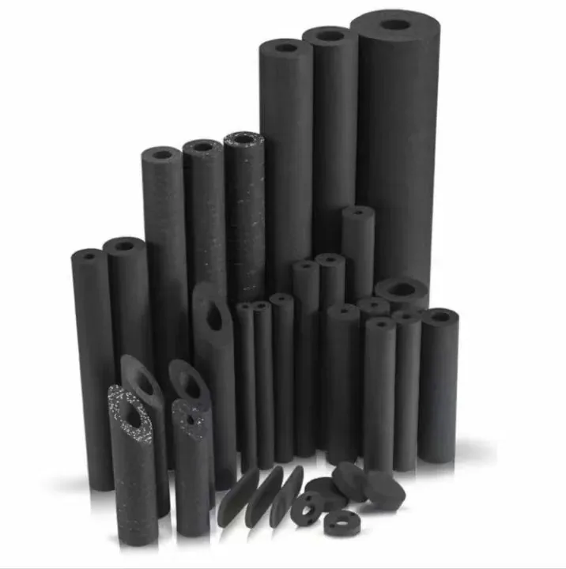
Compressed or sintered activated-carbon filtration.
Confirm: carbon source, iodine value, micron rating and dimensions.
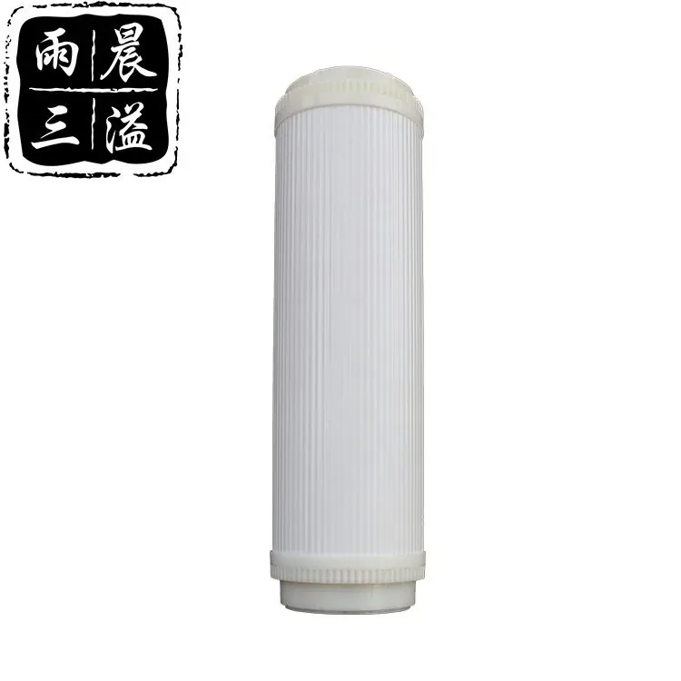
Granular activated-carbon stages.
Confirm: media source, treatment, weight and housing fit.
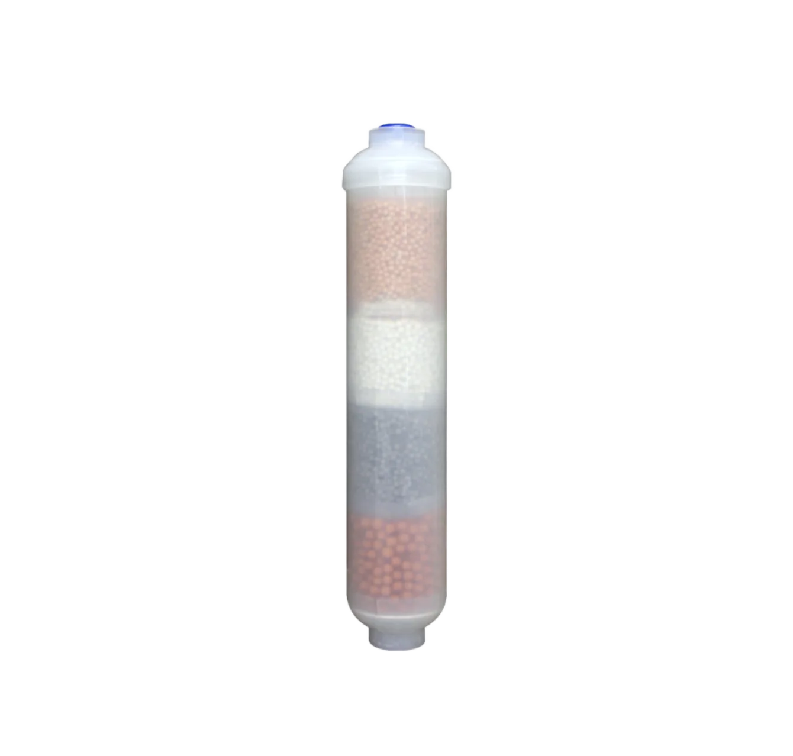
Post-carbon and inline polishing stages.
Confirm: connector, dimensions, media and project flow.

Quick-change cartridge family organized by connection format.
Confirm: matching head, connection geometry, dimensions and stage sequence.

Quick-change cartridge family organized by connection format.
Confirm: matching head, connection geometry, dimensions and stage sequence.

Quick-change cartridge family organized by connection format.
Confirm: matching head, connection geometry, dimensions and stage sequence.

Quick-change cartridge family organized by connection format.
Confirm: matching head, connection geometry, dimensions and stage sequence.

Quick-change cartridge family organized by connection format.
Confirm: matching head, connection geometry, dimensions and stage sequence.

Quick-change cartridge family organized by connection format.
Confirm: matching head, connection geometry, dimensions and stage sequence.

Quick-change cartridge family organized by connection format.
Confirm: matching head, connection geometry, dimensions and stage sequence.

Quick-change cartridge family organized by connection format.
Confirm: matching head, connection geometry, dimensions and stage sequence.
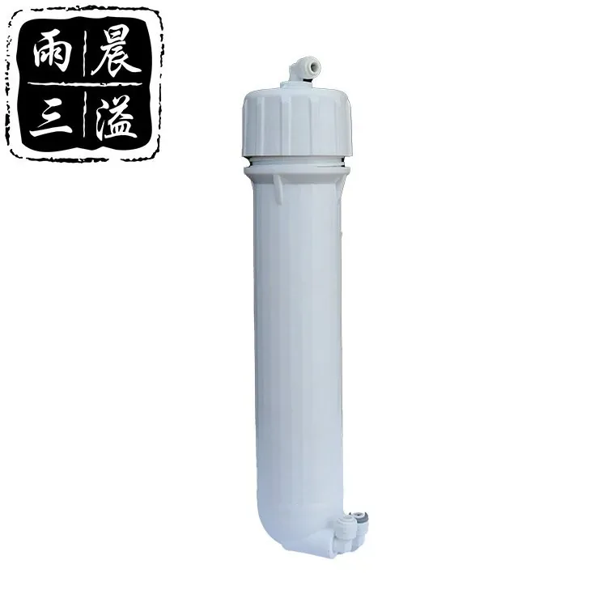
Reverse-osmosis membrane elements.
Confirm: model, capacity, housing and pump compatibility.
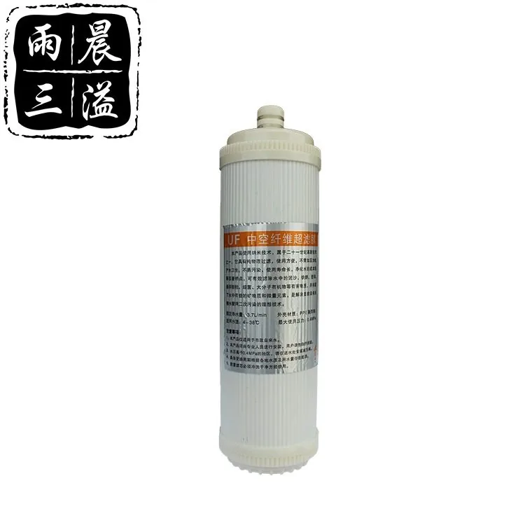
Hollow-fiber ultrafiltration stages.
Confirm: housing, connector, flow and operating conditions.
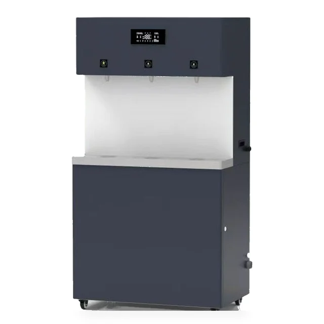
Instant-heating countertop and dispenser platforms.
Confirm: voltage, plug, control panel, temperature and branding.
Office, school and institutional drinking-water equipment.
Confirm: daily users, outlets, storage and filtration train.
Higher-flow commercial purification systems.
Confirm: feed water, target flow, tanks and installation space.
Commercial dispensing platforms with optional payment integration.
Confirm: payment hardware, region, telemetry and service model.
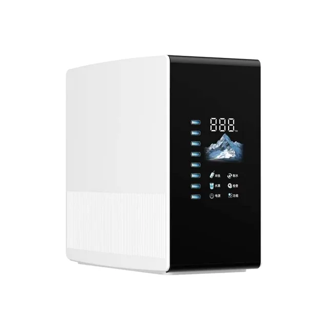
Household and under-sink drinking-water purification.
Confirm: capacity, installation, tank, stages and source water.
Cabinet and integrated RO configurations.
Confirm: stage count, optional UV, voltage and cabinet configuration.
Commercial high-flow RO purifier platforms.
Confirm: feed analysis, output, storage and electrical requirements.
Commercial drinking-water and dispensing systems.
Confirm: site demand, feed water, output and storage.
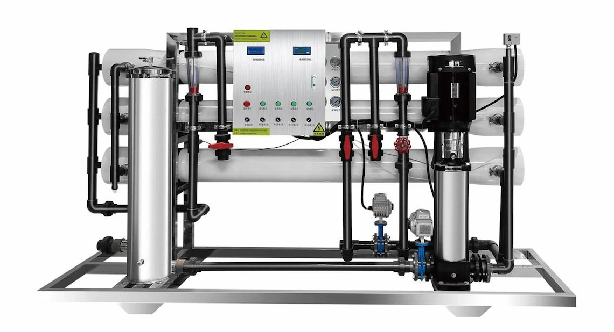
Industrial reverse-osmosis project systems.
Confirm: water analysis, capacity, recovery target and pretreatment.
Project-specific seawater desalination systems.
Confirm: feed salinity, product-water target, capacity and site utilities.
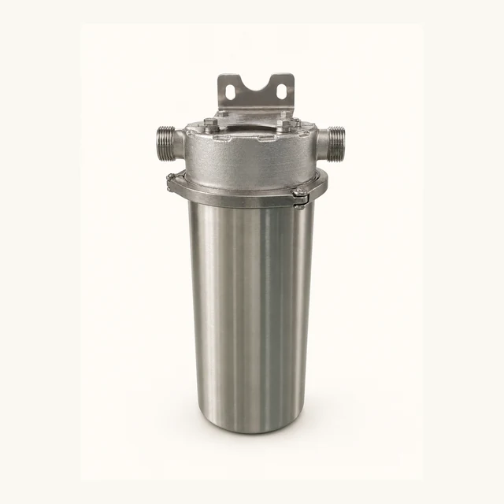
PP, Big Blue and stainless-steel filter housings.
Confirm: material, ports, pressure, bracket and cartridge fit.
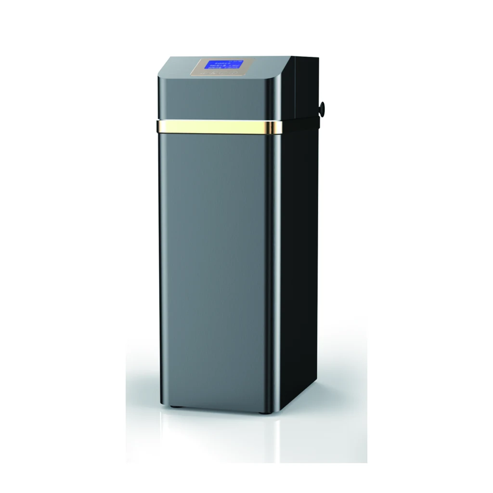
Automatic ion-exchange softening systems.
Confirm: hardness, flow, resin, valve and regeneration settings.
Automatic pretreatment and media filtration.
Confirm: media, source water, flow and backwash conditions.
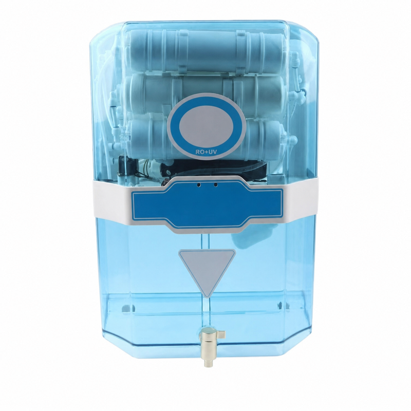
A cabinet RO water purifier configurable with five or six filtration stages, optional UV, and OEM/ODM project support.
Contact